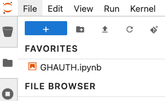

Activate GitHub Authentication
Activate GitHub Authentication#
This notebook is a convenient shortcut to store and quickly run the command that establishes an authenticated tunnel between this hub and GitHub, so that you can push securely over https (we recommend that you do not use git over SSH from this hub), and pull even from private repositories.
Note that if the repos you need to work aren’t configured for access from this hub, you need to go to
https://github.com/apps/hub-jupytearth-org-github-integ
and add them to your desired configuration.
To use it, run the cell below and follow the printed instructions.
import gh_scoped_creds
%ghscopedcreds
The code EBA7-DD8A has been copied to your clipboard.
You have 15 minutes to go to https://github.com/login/device and paste it there.
Waiting.....
Success! Authentication will expire in 8.0 hours.
Visit https://github.com/apps/hub-jupytearth-org-github-integ to manage list of repositories you can push to from this location
Tip: Use https:// URLs to clone and push to repos, not ssh URLs!
As a convenience, you can keep this notebook pinned in your JupyterLab favorites for quick access, so you can run it regardless of where you are:
